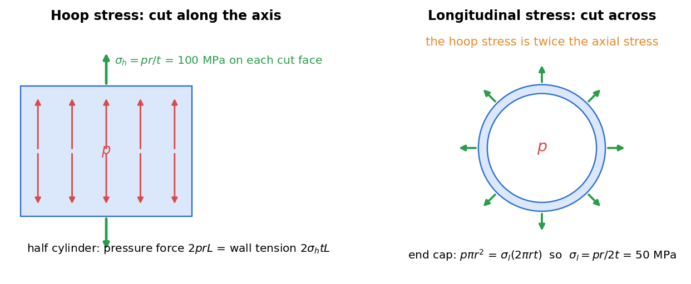

Strength of Materials · Thin-Walled Pressure Vessels · 3 min read
Thin Cylindrical and Spherical Pressure Vessels
Related: Plane Stress Transformation · Mohr's Circle for Stress · Generalized Hooke's Law and Poisson's Ratio
Thin-Wall Assumption
A pressure vessel is "thin-walled" when wall thickness is small compared to the radius (rule of thumb: ). Under this assumption, stress can be treated as uniform through the thickness, found from simple equilibrium (membrane theory) rather than a full elasticity solution.

Figure: cutting along the axis shows the hoop stress, cutting across shows the longitudinal stress. For MPa, m, mm the hoop stress is MPa and the axial stress MPa.
Cylindrical Vessel Under Internal Pressure
Two independent stresses act in the wall (both tensile, both principal stresses since the free inner/outer surfaces carry zero shear):
Hoop (circumferential) stress — from equilibrium of half the cylinder split along its axis, pressure pushing apart is balanced by wall tension on two longitudinal cuts:
Longitudinal (axial) stress — from equilibrium of a capped end, pressure force on the circular end area is balanced by wall tension around the circumference:
Note — the hoop stress is always twice the longitudinal stress for a thin cylinder, which is why cylindrical vessels/pipes that fail from overpressure typically split longitudinally (along a line parallel to the axis, since that's the plane the larger hoop stress acts to open up).
Spherical Vessel Under Internal Pressure
By symmetry, the stress is the same in every direction in the wall:
(equal to the cylinder's longitudinal stress formula) — a sphere is the most efficient shape for resisting internal pressure, since it has no "weak direction" like the cylinder's hoop stress.
Stress State at the Wall and Maximum Shear
At the outer (or inner) surface, the through-thickness stress is approximately zero (free surface, or at the inner surface itself, usually negligible compared to ), so the wall is approximately in a biaxial (plane) stress state — directly analyzable with Plane Stress Transformation and Mohr's Circle for Stress to find maximum shear stress, which governs yielding in ductile-vessel design:
Cylinder: treating the three principal stresses as , the absolute maximum shear stress (considering all three principal planes, not just the 2D in-plane pair) is
(the largest gap is between the hoop stress and the through-thickness stress, not between hoop and longitudinal).
Strain in the Wall
Using the biaxial (plane-stress) form of Generalized Hooke's Law and Poisson's Ratio, the change in radius/length of the vessel under pressure can be found from — this connects pressure-vessel analysis back to strain-gauge-based experimental stress analysis (see Strain Transformation and Rosettes), a common way pressure vessel stresses are verified in practice.
Design Note
Vessel design codes (ASME, etc.) apply these thin-wall formulas with an appropriate factor of safety and often a joint efficiency factor (for welded seams, which are weaker than the parent material) multiplying the allowable stress.
Check yourself
Q1. A thin cylinder with MPa, m, mm. Find the hoop and axial stresses.
MPa and MPa.
Q2. What is the wall stress in a sphere of the same , and ?
MPa in every direction, half the hoop stress of the cylinder.
Q3. Why does a boiled sausage split along its length?
The hoop stress is twice the axial stress, so the weaker longitudinal seam fails first.
Cross-domain links
- Fluids and Solids — hoop stress from the projected-area force balance used for hydrostatic force on curved surfaces.